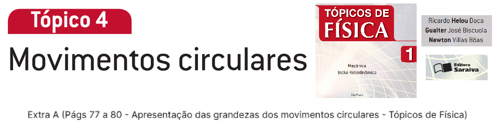

Instituto Federal de Educação, Ciência e Tecnologia do Rio Grande do Norte
Campus Natal-Central
Disciplina: Mecânica 1
Prof. Caio Graco
ALUNO: Rafael Bruno da Silva
Slide
Este é um apresentação do <a target="_blank" href="https://office.com">Microsoft Office</a> incorporado, da plataforma <a target="_blank" href="https://office.com/webapps">Office</a>.
Baixar em formato slide
⬇️ Baixar Seminário